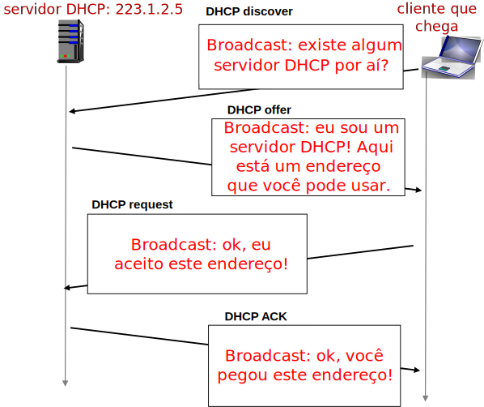
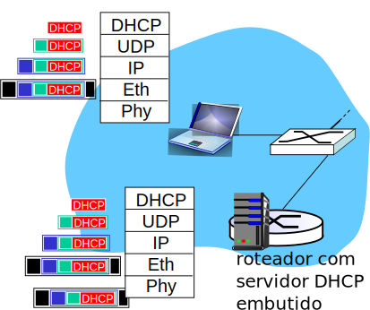

Aula 14 - Protocolo DHCP, Endereçamento Hierárquico
Diego Passos
Universidade Federal Fluminense
Redes de Computadores
Material adaptado a partir dos slides originais de J.F Kurose and K.W. Ross.
DHCP
Endereços IP: Como Conseguir Um?
Pergunta:
como um
host
obtém seu endereço IP?
Algumas possibilidades:
Configurado de maneira
estática
pelo administrador do sistema em um arquivo.
Windows: painel de controle → Redes → Configuração → TCP/IP → Propriedades.
UNIX:
/etc/rc.config
.
DHCP: D
ynamic
H
ost
C
onfiguration
P
rotocol.
Obtém configuração dinamicamente diretamente de um servidor.
“plug-and-play”.
DHCP:
Dynamic Host Configuration Protocol
Objetivo:
permitir que
host
dinamicamente obtenha seu endereço IP de um servidor da rede quando se conecta a ela.
Endereços atribuídos pelo servidor em esquema de “empréstimo” (
lease
).
Dispositivo pode renovar sua
lease
durante o uso.
Permite reutilização de endereços (dispositivos só possuem endereço enquanto conectados à rede/ligados).
Dá suporte a usuários móveis que querem se conectar a rede.
Visão geral do DHCP:
Host
envia mensagem do tipo
“DHCP discover”
em
broadcast
[opcional].
Servidor DHCP responde com um
“DHCP offer”
[opcional].
Host
requisita endereço IP com mensagem
“DHCP request”
.
Servidor DHCP envia endereço com mensagem
“DHCP ack”
.
Cenário de Cliente-Servidor DHCP
DHCP: Interação Típica

DHCP: Mais que Apenas Endereços IP
DHCP pode retornar mais que apenas um endereço IP adequado para aquela sub-rede.
Endereço IP do
roteador de primeiro salto
.
Também chamado de
gateway padrão
.
Nome e endereço IP do servidor DNS local.
Máscara de sub-rede.
...
DHCP: Exemplo (I)
Laptop se conecta à rede e precisa do seu endereço IP, endereço do roteador de primeiro salto, endereço do servidor DNS: utilizar DHCP.
Requisição DHCP encapsulada em UDP, encapsulado em IP, encapsulado em 802.3 (Ethernet).
Quadro Ethernet enviado em
broadcast
na rede local, recebido (em particular) no roteador rodando o servidor DHCP.
Ethernet demultiplexado para IP, demultiplexado para UDP, demultiplexado para DHCP.
DHCP: Exemplo (II)

Servidor DHCP formula um DHCP Ack contendo o endereço IP do cliente, endereço do roteador de primeiro salto, nome e endereço do servidor de DNS.
Mensagem é encapsulada e enviada para o cliente.
Cliente passa a saber seu endereço IP, endereço do servidor DNS, endereço IP do roteador de primeiro salto.
DHCP: Saída de Captura do Wireshark
Endereçamento Hierárquico
Endereçamento IP: Como Obter Um?
Pergunta:
como
a rede
obtém seus endereços?
i.e.
, seu prefixo.
Resposta:
é alocada uma porção do espaço de endereços do seu ISP.
Uma
sub-rede menor
, contida na sub-rede do ISP, é alocada.
Exemplo:
Bloco do ISP
11001000 00010111 0001
0000 00000000
200.23.16.0/20
Organização 1
11001000 00010111 0001000
0 00000000
200.23.16.0/23
Organização 2
11001000 00010111 0001001
0 00000000
200.23.18.0/23
Organização 3
11001000 00010111 0001010
0 00000000
200.23.20.0/23
...
...
...
Organização 7
11001000 00010111 0001111
0 00000000
200.23.30.0/23
Endereçamento Hierárquico: Agregação de Rotas (I)
Endereçamento hierárquico permite o anúncio eficiente de informações de roteamento.
Endereçamento Hierárquico: Agregação de Rotas (II)
Suponha que a organização 1 mude de ISP, mas queira manter seus endereços.
Agora, o ISPs-R-Us tem rota
mais específica
para organização 1.
Endereçamento hierárquico + casamento por prefixo mais longo.
Endereçamento IP: Última Palavra...
Pergunta:
como um ISP obtém um bloco de endereços?
Resposta:
ICANN: Internet Corporation for Assigned Names and Numbers.
http://www.icann.org/
Aloca endereços.
Gerencia DNS.
Atribui nomes de domínios, resolve disputas.